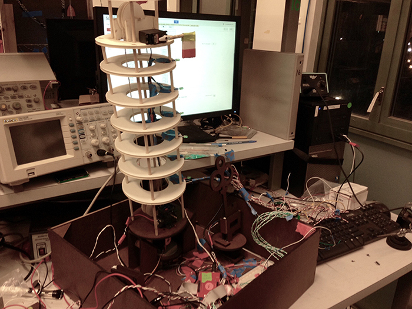

Overview
|  |
DrEd is up to no good! His latest plot for world destruction involves making the Leaning Tower of Pisa straight. We cannot allow such a travesty to happen to one of Italy's cultural icon. It is up to two heroes to save the day through a series of actions. The display begins in an armed state with DrEd instilling fear by generating quakes. The tower shakes and the base vibrates. When two heroes step up and place their hand over the IR sensors, this fear and panic stops. One hero is presented with a message containing four possible passwords. The other hero must enter the correct password to advance the next stage. As soon as the correct password is entered, the key is unlocked. The hero must then remove the key from its current slot and insert it into the other slot. This action allows the hero to correct the angle of the tower via a control knob. Upon success, an Italian flag goes up and a victory song plays. |